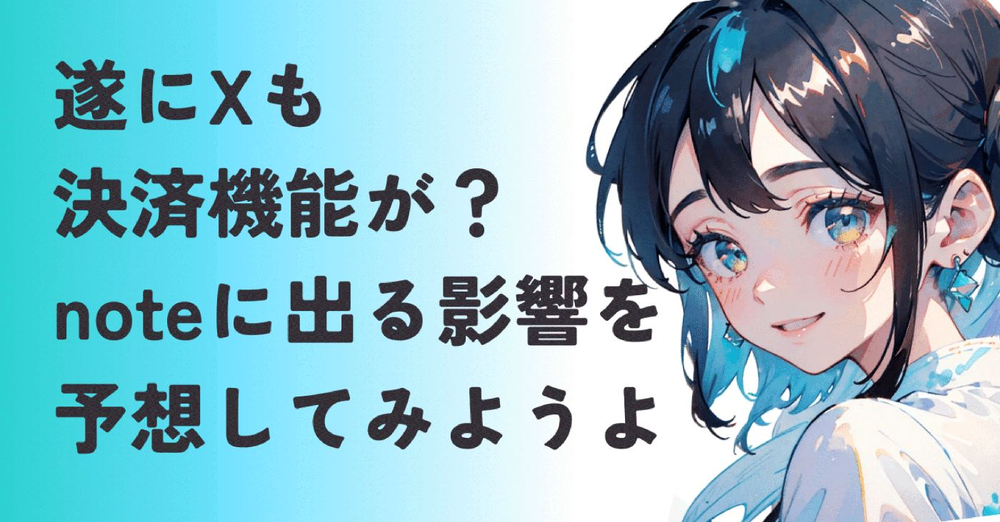
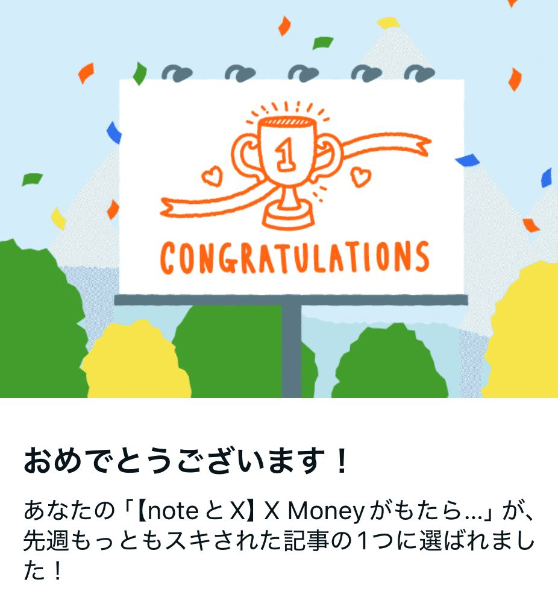
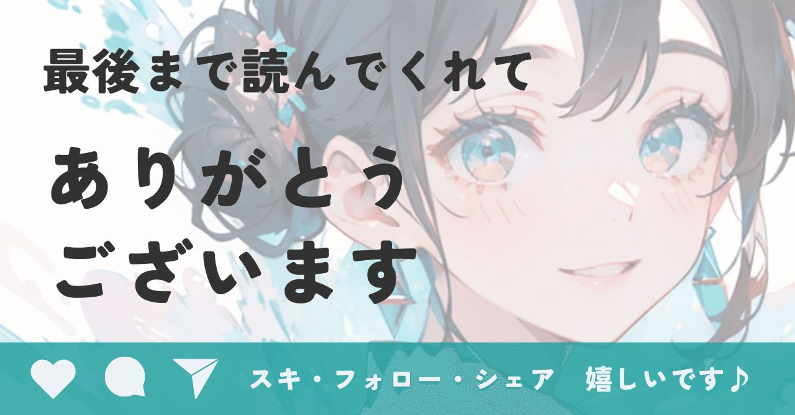

2026年、X(旧Twitter）社によるX Moneyは、
ビジネスのあり方を根本から変えていく。
本記事では最新のSNS運用として、
noteとXを使い分けるマーケティング戦略を多角的に予想・分析しました！

ありがとうございます！！
私たちのタイムラインを揺るがす歴史的分岐点がいよいよ現実味を帯びてきました。
イーロン・マスク氏が仕掛ける金融革命、
X Moneyです。
X Moneyとは
イーロン・マスク氏による「Everything App（万能アプリ）」構想の中核となる決済基盤。Visaとの提携によりX上で銀行口座のような送金・決済に加え、株や暗号資産の取引も可能。
2026年3月現在、米国を中心に試作版を展開。年利6%の預金金利やハンドルネーム入りデビットカード発行など、既存の銀行を脅かす機能がガシガシ実装されてます。
Visaとの提携、そして3秒で取引が完結するSmart Cashtagsの登場。
noteやXでアカウントを育てているクリエイターはもちろん、ただの新しい決済手段の話じゃ済まない。
情報の流れが、お金の流れに直結する
今までとは全く違う次元のフェーズに突入しようとしています。
正直、noteを愛用している身としては
と、気が気じゃなくなって夜中にGeminiと壁打ちしまくったので、
X Moneyとnote運用
についてまとめてみました。
長くなっちゃったけど、発信において損はないのでお付き合いください。
X Moneyが変える、購買における摩擦係数
まず、X Moneyの何がそんなに凄いのか。
それは買うまでの過程の最小化ですね。
今まではXで有益な情報を見つけても、
① noteへ移動
② クレジットカードを登録
③ パスワードを入力
④ ようやく購入
という最低でも4つのステップが必要でした。
ところが、X Moneyならタイムラインのタグをタップして3秒で決済完了。
このスピードの差がコンバージョン率（購入率）に致命的な格差を生みます。
さらに注目すべきは、10円単位で価格を決められるマイクロペイメント。
記事の続きを10円で読めるんで、購入というより投げ銭的な「いいね」の延長線に近い。
既存の金融機関や外部誘導を前提としたプラットフォームが、この構造的なスピードに勝つのはかなり厳しいのではないでしょうか。
noteとX。進む分断と棲み分け
ここまでの話だと、
note、不利じゃん！
と思われるかもですが、私はそうは思わない。
むしろnoteとXのユーザーの棲み分けは、さらに明確になっていくと予想します。
X Moneyは衝動とフローを激化する
決済が3秒で終わると何が起こるかというと、即決済ボタンを押させるための煽りや、刺激の強い釣り記事が増えやすくなる。
ただでさえ強い言葉が飛び交うX。見る側としては、さらに気疲れしそうな予感です…
noteは信頼とストックを蓄積する
一方noteは、過剰な煽りから創作を守る動きを強めています。
SNSからの外部流入が減る中で、noteは
すでに信頼関係がある人
検索で深く調べたい人
が集まる場所へと純化していく。
それに決済にひと手間かかることは、裏を返せば落ち着いて読み、納得して買うためのフィルターになりますよね。
信頼をベースにした、静かで深い読書体験。
これは今のXではまだまだ手に入らない環境。
プラットフォームの思想そのものが、決定的に分断されていく。
結果として深い思考や信頼を求める層は、
Xを決済・告知ツールとして切り離し、健全な創作環境を守ろうとするnoteをメインに楽しむというユーザーの棲み分けが進む。
これが今後の動向の1つとして考えられるかなと推察します。
検討できる発信者の立ち回り
情報の波が激しくなる中で、私が取りたいSNS運用戦略のキーワードは共生です。
① 両者の役割を明確に使い分ける
② 同時並行で発信していく
について、順に解説します。
①Xとnoteで役割を変える
1. X Moneyを入り口にする
決済のハードルが低いX Moneyでまずは少額（10円〜100円）の記事を販売。
noteの過去記事で賄えばやりやすいかも。
ここで大切なのは売上ではなく、
あなたの商品を買うという体験
を、Xという大きな市場にいる読者にしてもらうこと。Xの拡散力で新規層の財布を開く役割ですね。
2. noteはやっぱり本丸でしょう
Xであなたに興味を持ち、少額決済を経た読者をnoteへと誘導します。ここは今と同じ。
noteの煽りのない環境で、
思考のプロセスや体系的な深い知恵
を提供します。
特に1,000円以上の高単価な商品やメンシプといった長期的なファンとの繋がりは、クリーンなイメージの強いnoteが向いています。
これはX Articles(記事機能)が広まってきた時の過去記事でも触れてますね▼
https://note.com/alive_sheep6563/n/n05fdf1b00532
② 役割を変えない同時発信
ここで私が提案したいのが、役割を変えずにnoteとXで同時に発信するという考え方。
同じ内容をプラットフォームの特性に合わせて同時に投下する3つのメリットを挙げてみます。
1. SEOとインプレッションの両取り
実はGoogleの検索結果では、noteもXも
ドメインパワーが凄まじいんです。
• note
じっくり検索して解決したい層に強く、
SEOの流入もしっかり狙える
• X Articles(記事機能)
最新トレンドを検索する層に強く、タイムラインでの爆発力がある
同じ記事を両方に置くことで、Google検索の結果を占有できる確率が高まるんですね。
2. 読者のいる場所で決済させる
読者がXにいるなら、X で買ってもらい、
読者がnoteに来たならnoteで買ってもらう。
コンビニやスーパーに同じ商品を置いてるようなもんで、見つけて買ってもらうことが大事。
X・noteどちらでも決済できるようにするのは、機会損失を防ぐうえでも合理的な形だと思いませんか？
3. バラ売りとまとめ売りの使い分け
中身が同じでもパッケージを変えるという工夫もできます。
• X
1記事単位の切り売り。
ニュース感覚でサクッと買ってもらう。
• note
過去記事を束ねたマガジンや定期購読にメンバーシップ。
あなたの専門性を高単価で買ってもらう。
Xはレジ横のついで買い、noteは本屋の棚のようなイメージです。
同時発信のデメリット
Googleは全く同じ内容のページが複数あると、どちらかの評価を下げることがあります。
Xは結論や要点重視
noteは情緒やプロセス重視
という感じで、リード文や構成をリライトするのが安全。
また読者に「どちらを見ても同じ」だと思われると、コアファンが両方をチェックしなくなるのも懸念事項。なので、
Xは100円のバラ売り
noteは1,000円のマガジンでまとめ売り
的に販売形態を変えるのが良さそうです。
リスク分散としてのポートフォリオ
X Moneyに収益を依存しすぎるのは、致命的なリスクになりますよね。
アカウント凍結が銀行口座の凍結に繋がるので、noteにストックして自分の資産を守る。
先日公開されたnoteの公式データによると、
40%の記事は１年後も読まれてる
とのこと。
改めてnoteのストック型プラットフォームとしての価値を認識できました。
https://note.jp/n/n7917dc1cdfe9
技術が変わっても、言葉の価値は変わらない
2026年、X Moneyで収益化のチャンスは劇的に増えるでしょう。
発信者はXの強力な決済インフラの恩恵も受けることで、無料にしていた情報に正当な対価がつくチャンスでもある。
でもテクノロジーが決済時間を縮めても、人の心を動かし長く愛されるのは深く誠実な言葉。
速さのXで広く種をまき、
深さのnoteで丁寧に収穫する
このサイクルを回す人が、強固なクリエイター基盤を創り上げていくのではないでしょうか。
あなたはX Moneyの登場をどう感じましたか？
こんな使い分けがあるんじゃない？
この方の分析が凄かった！
などコメントで教えてもらえると嬉しいです！
ここまでお付き合いいただき、
ありがとうございました。
参考にしたりゅーいちさんのポストはこちら▼
https://twitter.com/doragon10822/status/2031125373828645273?s=46
ところでライフスタイルが変わってきたので、朝投稿に切り替えてみました！
あなたは朝派？夕方派？その他？
投稿時間で良かったこと教えてください💦
